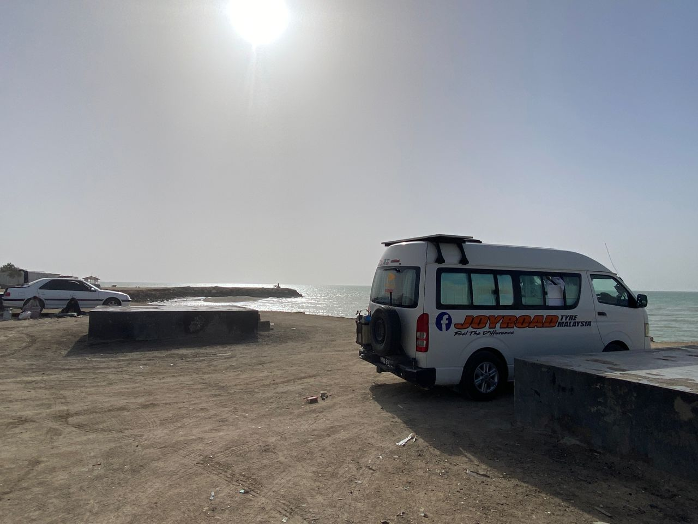
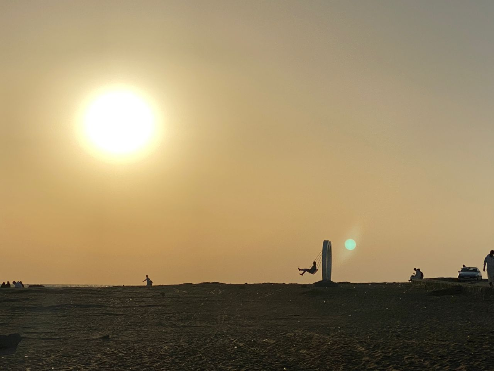
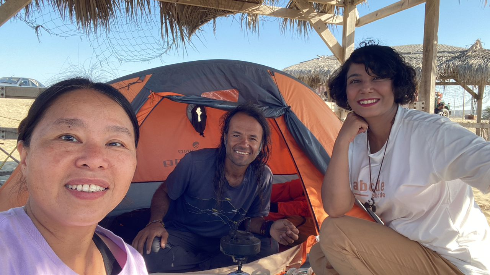
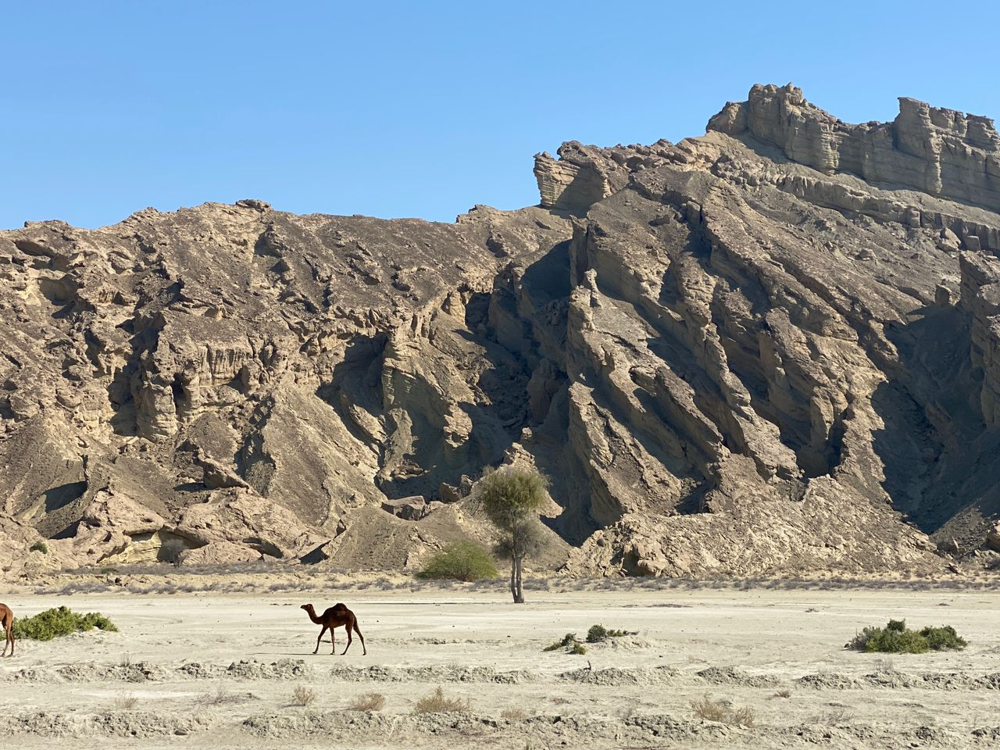
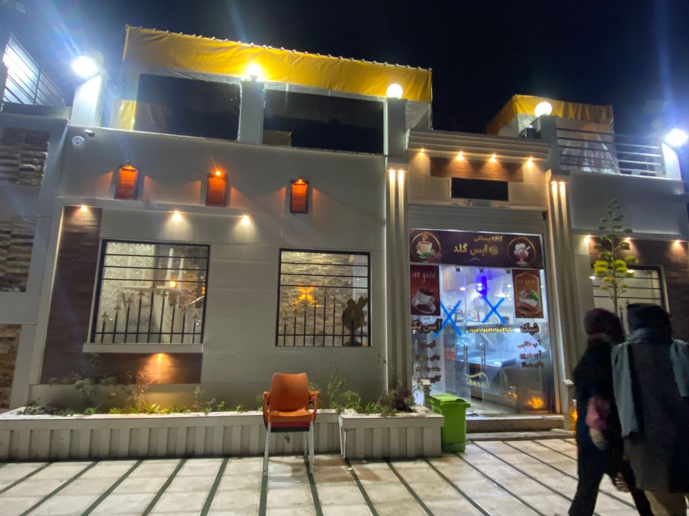

Real Story · 中文
从 Chabahar 离开以后，路又开始了。
19 February 2024，我从 Chabahar 再次启程。 这一次，不是去下一个家庭，不是去一个固定目的地，而是重新回到长路上： 从 Iran，慢慢往更远的方向走，最后会一路走向 Iceland。
这个阶段没有华丽开场。 它是 practical road life：海边停车、手机坏掉、买备用手机、沙尘、陌生路段、 电力管理、没有太阳的日子，以及普通 restaurant car park 的过夜。

20 February
A broken phone, a necessary replacement.
The next overnight stop was near Iran Rocky Beach. Around this time, Tuzi’s iPhone 13 Pro Max developed an IC malfunction and needed warranty repair back in Malaysia. For a solo overlander, a working phone is not a luxury — it is GPS, map, translation, safety contact, and route confidence.
So Tuzi went into town and bought a Realmi 13C for navigation use: 59,000,000 IRR, around RM674. It was a road survival purchase, not a shopping moment.

21–22 February
Driving into Darak under sand and sun.
On the way to Darak Desert Beach, Tuzi was hit by a small-scale sandstorm. Visibility became poor, the air turned unclear, and the huge sun stayed above like a white fire. She was scared and followed the front lorry closely.
This was the kind of road moment that does not look dramatic on a map, but inside the driver’s seat, every second becomes very real.

23 February
A night beside the black stone.
On 23 February, Tuzi overnighted near the black stone landscape. After the coast, wind, sand and movement, this stop felt stark and quiet — another reminder that Iran’s road was not one single landscape, but many different forms of silence.

24 February
Bandar Abbas and the problem of no sun.
On 24 February, Tuzi overnighted at Bandar Abbas. For two continuous days, she had not seen the sun clearly, which meant the EcoFlow battery could not charge properly.
Luckily, there was still some remaining power for the fan, while the gas stove still covered cooking and boiling water. Road life is not only scenery; it is also energy calculation, weather, and careful use of whatever power remains.
25–26 February
Ice Gold Cafe, Fasa.
On 25–26 February, Tuzi stayed in front of the car park at Ice Gold Cafe in Fasa. It was one of those ordinary road stops that do not look dramatic, but they matter: a place to pause, rest, cook, charge what can be charged, and continue.

English Memory Summary
A road chapter after Chabahar.
After leaving Chabahar on 19 February 2024, Tuzi moved through a sequence of practical road stops: Tis beachside parking, Iran Rocky Beach, Darak Desert Beach, Black Stone, Bandar Abbas, and Ice Gold Cafe in Fasa.
This was not a polished tourist route. It included a phone failure and replacement, sandstorm driving, new bicycle overlander friends, black-stone landscapes, cloudy days without enough solar charging, and a final restaurant car park stop before continuing deeper into Iran.
Heart Statement
离开一个家以后，路不会马上温柔；但它会继续给你下一盏灯。
After Chabahar, the journey became road again: sand, battery, phone, sea, stones, strangers, and one more parking place to sleep.